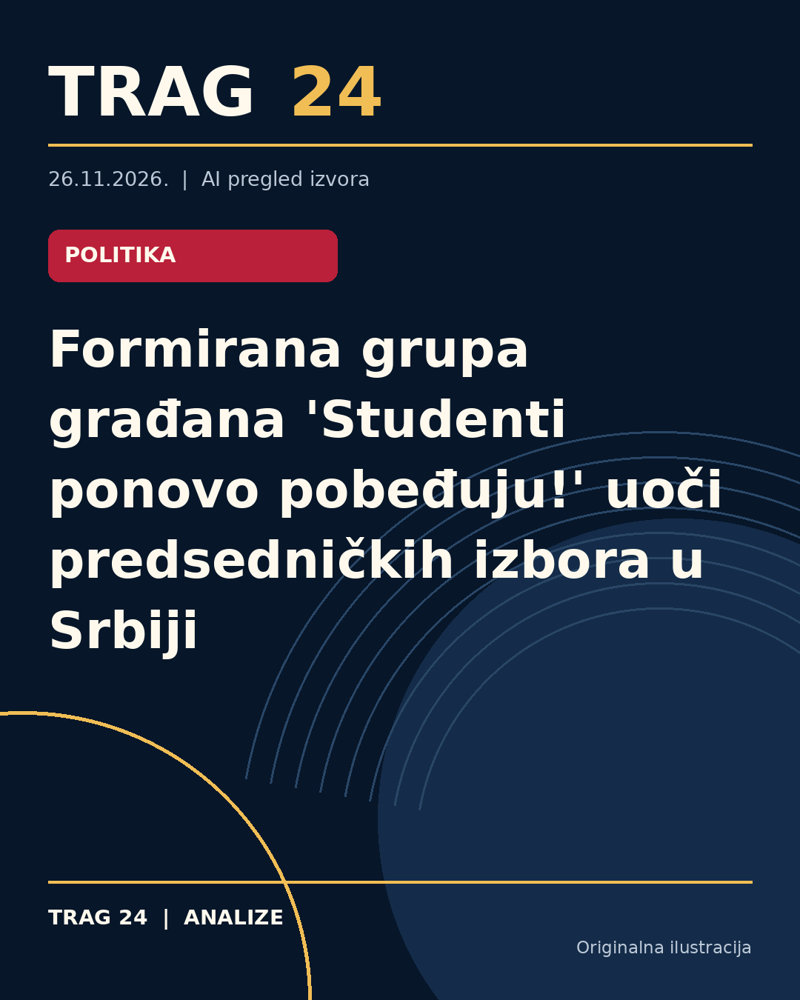

Formirana grupa građana 'Studenti ponovo pobeđuju!' uoči predsedničkih izbora u Srbiji

ŠTA SE DOGODILO
Grupa građana pod nazivom 'Studenti ponovo pobeđuju!' formirana je kao novi politički subjekt koji izlazi na predsedničke izbore u Srbiji zakazane za 27. decembar. Ova inicijativa proistekla je iz studentskog pokreta koji je prethodno učestvovao na parlamentarnim izborima i osvojio 140 poslaničkih mandata.
HRONOLOGIJA
Nakon parlamentarnih izbora održanih 25. oktobra na kojima je studentska lista ostvarila značajan rezultat, grupa 'Studenti ponovo pobeđuju!' formirana je kao nastavak zajedničkog političkog delovanja. Odluka o raspisivanju predsedničkih izbora doneta je od strane predsednika Skupštine Srbije Aleksandra Čupića, a zvanični datum izbora je 27. decembar.
ŠTA NAVODE IZVORI
Na društvenim mrežama i u saopštenjima studenti ističu da im je cilj da građanima pruže novu priliku da odluče o budućnosti Srbije kroz predstojeći izborni proces. Potpisnici grupe su Aleksandar Cvetković, Katarina Šćepanović, Dušan Đurđević, Daliborka Purić, Stanislav Milošević, Aleksandra Štimac, Željko Hubač, Milica Jovanović, Sanja Fric, Miroslav Andrić, Maja Crnogorac Đurić, Slobodan Bubnjević, Milica Vasiljević Blagojević, Goran Perišić i Mirjana Nikolić. Izjave i tekstovi ne ulaze u detalje oko strategije ili kandidata koje grupa može podržati na izborima.
ŠTA JE POTVRĐENO
Sa tri nezavisna izvora potvrđeno je da je grupa zvanično registrovana i javno predstavljena, kao i da će se kandidovati na predsedničkim izborima 27. decembra. Takođe, ostaje potvrđeno da je Studentska lista ostvarila značajan rezultat na parlamentarnim izborima što je motivisalo osnivanje ove grupe.
ŠTA NIJE POTVRĐENO
Nije potvrđeno ko će biti predsednički kandidat ili kandidati koje će grupa podržati, niti su detalji o političkim programima i planovima saopšteni. Takođe, nisu potvrđene informacije o daljim organizacionim koracima ili koalicijama sa drugim političkim akterima.
ŠTA OSTАJE OTVORENO: Ostaće da se prati razvoj događaja u pripremi predsedničke kampanje, zvanične kandidate koje će grupa podržati i njihov politički program. Takođe, nije poznato na koji način će ovaj novi subjekt uticati na širu političku scenu Srbije i kakav će biti njihov uticaj na sam izborni ishod.
Izvori
- https://vreme.com/vesti/predsednicki-izbori-grupa-gradjana-studenti-ponovo-pobedjuju/
- https://insajder.net/prenosimo/oformljena-grupa-gradana-studenti-ponovo-pobeduju-za-predsednicke-izbore
- https://www.euronews.rs/srbija/politika/253861/grupa-studenti-ponovo-pobeduju-najavila-izlazak-na-izbore/vest
Ova analiza je pripremljena uz pomoć veštačke inteligencije na osnovu javno dostupnih izvora. Navodi izvora nisu nužno nezavisno potvrđeni.